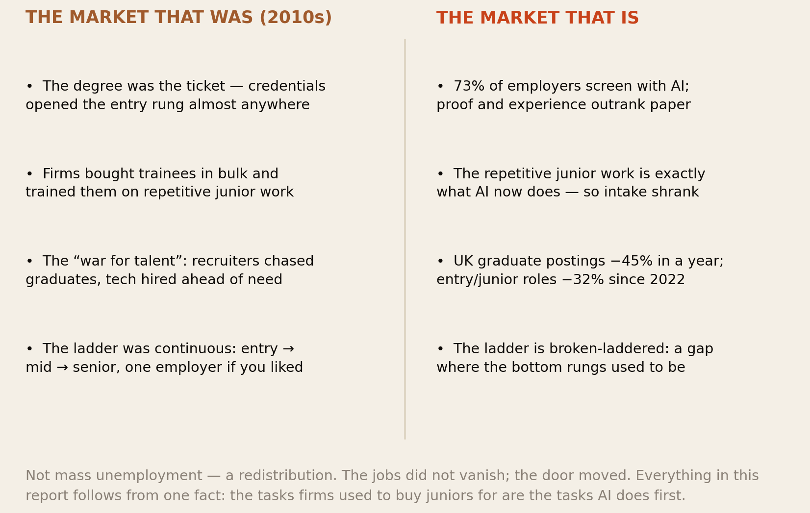
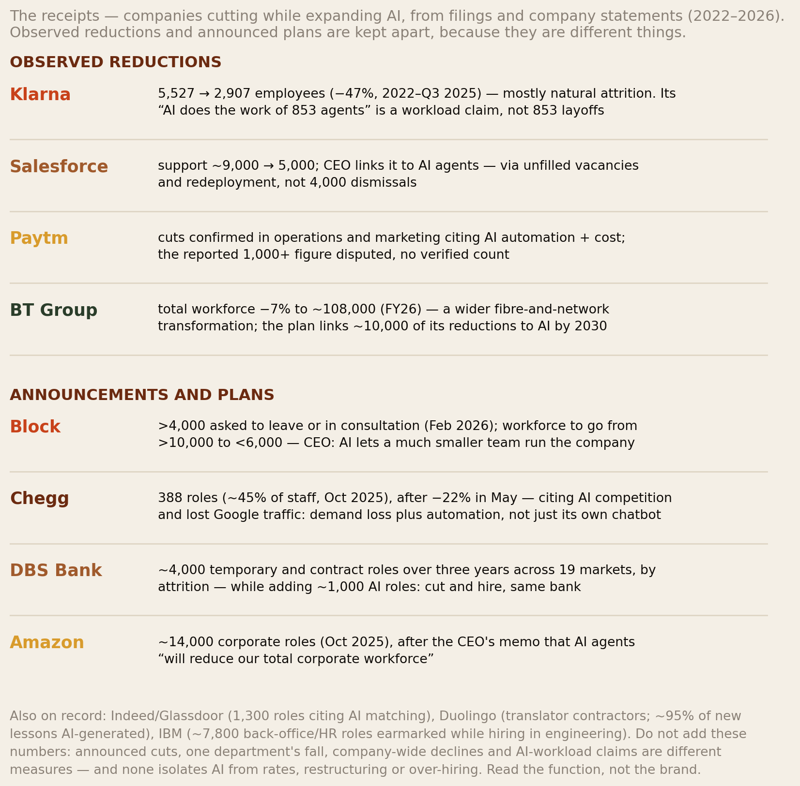
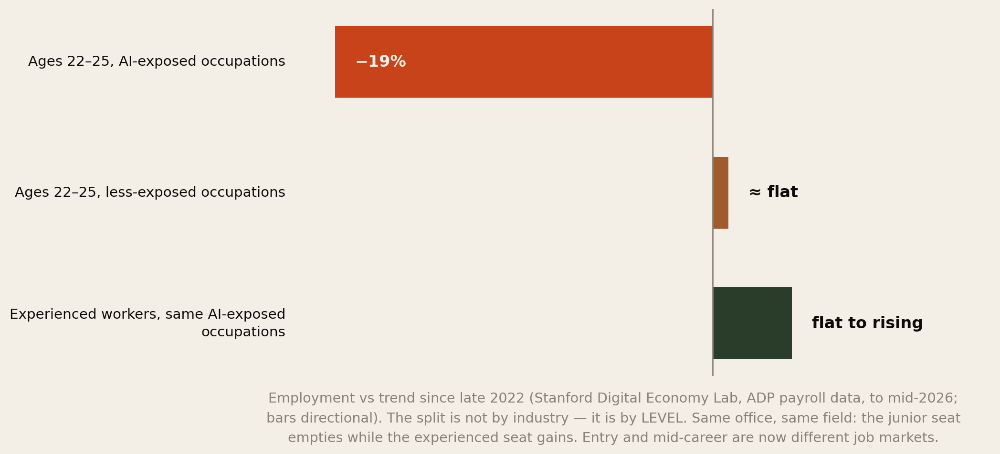
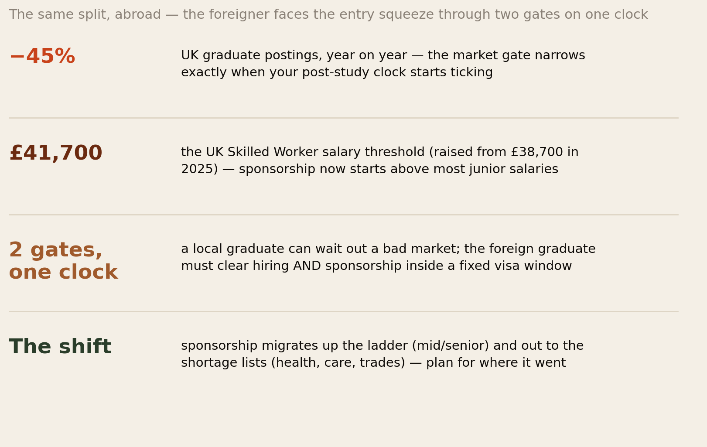
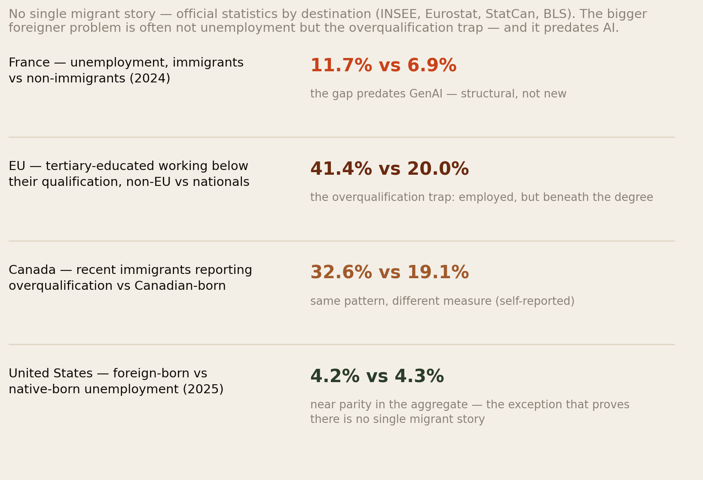
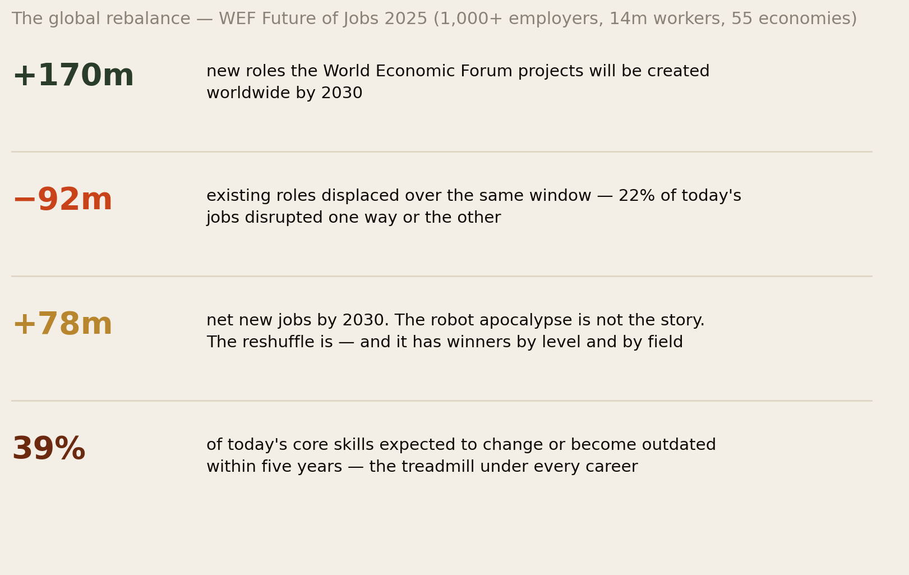
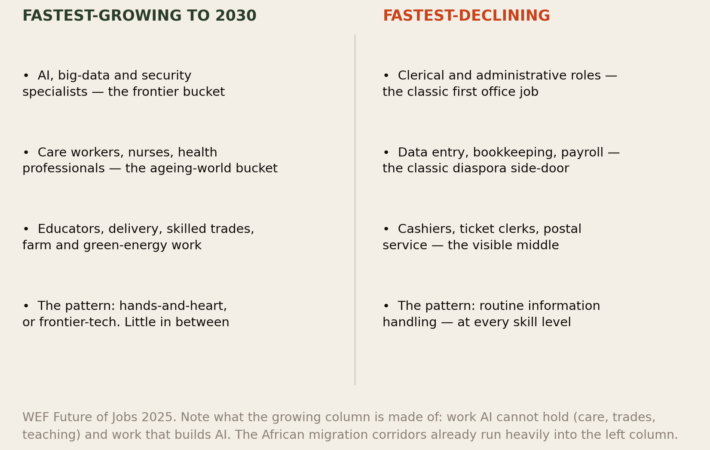
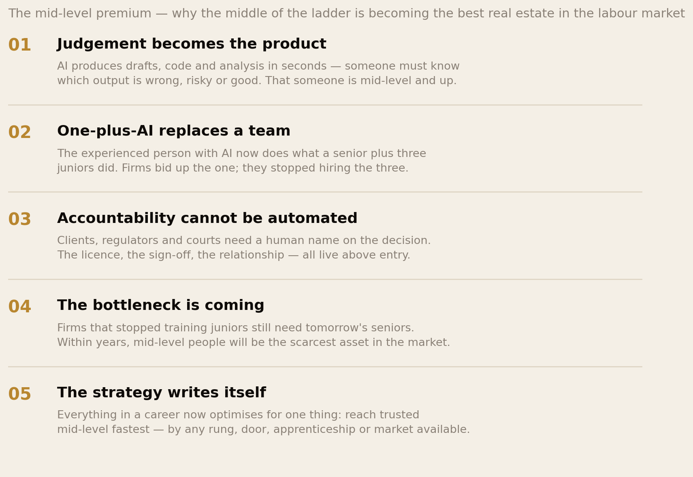
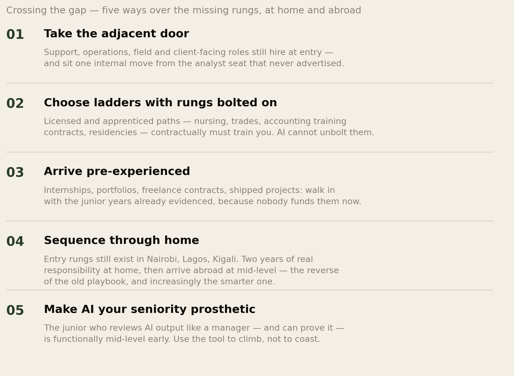
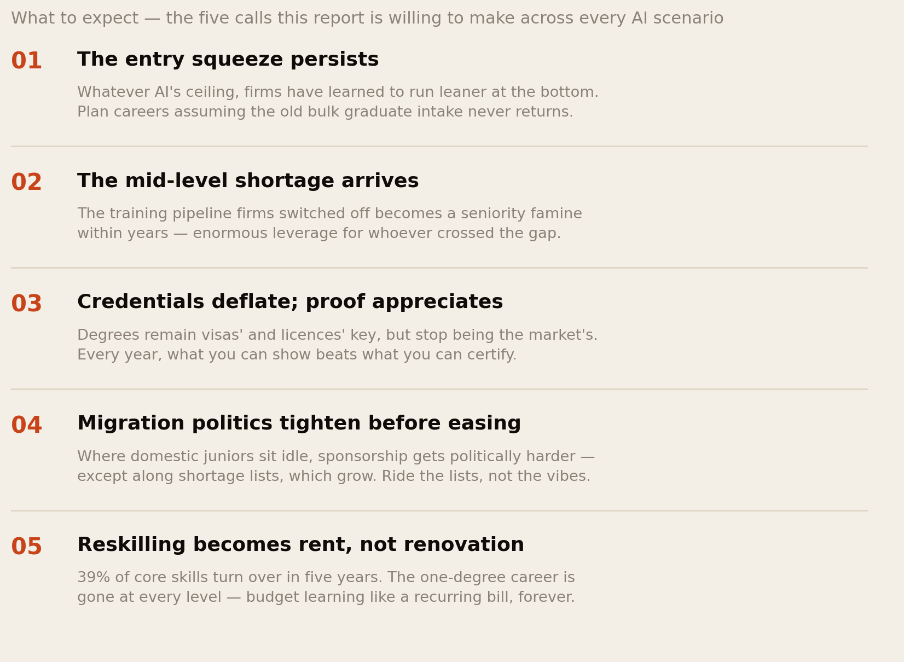

The New Ladder.
The job market did not collapse after AI. It did something stranger: it split by level. Young workers in AI-exposed occupations sit 19% below trend while experienced workers in the same fields hold or gain; UK graduate postings fell 45% in a single year while the sponsorship salary threshold rose to £41,700 — two jaws of a vise closing on exactly the rung foreigners enter through. This report compares the market that was with the market that is, maps the entry-versus-mid divide globally and abroad, prices the coming mid-level premium — and makes the five calls about the future it is willing to stand behind.
Section 01The Short Version
Every career plan in this network — and every family plan behind it — was drawn on a map of the old job market. The map has changed while people were mid-journey. Here is the new one, measured:
- Before and after, in one line: the jobs did not vanish; the door moved. The pre-AI market bought graduates in bulk and trained them on repetitive junior work. That repetitive junior work is precisely what AI now does — so intake collapsed at the bottom while everything above it held: UK graduate postings fell 45% year-on-year (down about a third since 2022, the lowest since 2018), and 73% of employers now screen with AI. The aggregate job market looks fine. The entry job market does not.
- The split is by level, not industry. Stanford’s payroll-data research: employment for ages 22–25 in AI-exposed occupations is ~19% below trend, while experienced workers in the same occupations are flat to rising. Same office, same field — the junior seat empties, the experienced seat gains. Entry-level and mid-career are now, functionally, different job markets.
- Abroad, the split doubles. The foreign graduate faces the entry squeeze through two gates on one clock: a hiring market that shrank exactly as their post-study window opens, and sponsorship thresholds — the UK’s now £41,700 — priced above most junior salaries. Sponsorship is migrating up the ladder (mid/senior) and out to the shortage lists (health, care, trades). Plan for where it went, not where it was.
- The global rebalance has winners, and they cluster in two buckets. The WEF projects 170 million roles created and 92 million displaced by 2030 — net +78 million: growth in hands-and-heart work (care, health, education, trades, delivery, green energy) and frontier-tech work (AI, data, security); decline in routine information-handling at every level — the clerical and back-office roles that were the diaspora’s classic side doors.
- The future’s biggest prize is the middle. Firms that stopped training juniors still need tomorrow’s seniors — a training bottleneck that makes trusted mid-level people the scarcest asset of the next decade. Every strategy in this report reduces to one instruction: cross to mid-level fastest, by any rung available — licensed paths, adjacent doors, arriving pre-experienced, or the reverse playbook: building real experience at home and entering the global ladder in the middle.
The old market sold ladders. The new one sells a gap — and pays a premium to everyone who finds a way across it.
Section 02The Market That Was

Be precise about what “before AI” means, because the nostalgia version misleads. The 2010s labour market ran on a specific bargain: the credential was the ticket, and the employer paid for the apprenticeship. A degree — almost any degree — opened a graduate scheme or junior seat; the first two years were repetitive, supervised work (the reconciliations, the first drafts, the test scripts, the minutes) that was simultaneously the firm’s grunt work and the worker’s training. Firms tolerated the deal because they needed the grunt work done and the seniors grown. The “war for talent” years — cheap money, tech over-hiring, recruiters chasing graduates — were that bargain at maximum generosity, and they are the years the diaspora’s current playbook was written in: study abroad, catch the graduate scheme, convert to sponsorship, settle. Our whole worth-it arithmetic assumed the bargain held.
Note the load-bearing detail: the entry rung existed because the repetitive work existed. Nobody hired juniors out of charity; they hired them because someone had to do the routine tasks, and training came bundled. That is the hinge on which everything in the next section turns.
Section 03What Actually Changed
Then generative AI arrived, and the change was surgical rather than apocalyptic. Total employment did not crash; unemployment stayed unremarkable; the robot apocalypse headlines aged badly. What changed is which tasks firms must buy humans for — and the first tasks AI took were, precisely, the repetitive junior ones the entry bargain was built on. The first drafts, the routine analysis, the standard letters, the boilerplate code: the grunt work went to the machine, and with it went the economic reason to bulk-buy trainees. The result shows up exactly where the mechanism predicts: hiring freezes at the bottom, stability above — UK graduate-specific postings down 45% year-on-year, entry and junior vacancies down roughly a third since late 2022, US young-worker employment in AI-exposed occupations sliding while experienced employment holds. Meanwhile 73% of employers screen applications with AI, which means the shrunken number of entry doors are also guarded differently — the two-readers problem our AI-and-migration report mapped.
Hold on to the correct summary, because both popular versions are wrong. Not “AI is taking all the jobs” — the WEF’s net projection is positive 78 million by 2030, and experienced workers are gaining. Not “the panic is overblown, nothing changed” — tell that to the 2026 graduate holding forty rejections. The accurate sentence is narrower and more useful: AI repriced the ladder, rung by rung — and the bottom rung took nearly all of the hit.
And now the honest complication, because the attribution is genuinely contested and this library does not hide live debates. LinkedIn’s 2026 Labor Market Report argues the slow market is not AI’s fault: in its data, hiring trends look similar for the most- and least-AI-exposed roles — and for entry versus experienced software engineers — with interest rates and economic uncertainty as the primary drivers; hiring sits 20–35% below pre-pandemic levels across advanced economies while emerging markets surge (India +40%, the UAE +37%). A Danish study of linked administrative data found no detectable average effect on earnings or hours two years after ChatGPT launched in the occupations studied; the New York Fed documents the graduate market hardening (22–27s’ unemployment 3.6% in 2019 → 5.6% in 2026) but points also at remote work destroying the mentoring that entry jobs ran on. The refined Stanford reading itself is subtler than the headline: employment of 22–25s fell ~11% in the two most-exposed occupation quintiles while growing ~10% in the three least-exposed — a 19% relative shortfall, not an absolute collapse, attenuated by education controls, with some trends predating GenAI. Where does that leave a reader? Exactly here: the entry squeeze is real, measured, and worst in AI-exposed office work; how much is AI versus rates is contested — and for the jobseeker it barely matters, because the door is narrower either way, and every strategy in this report works under both explanations.

And because abstractions hide what names reveal, here are the receipts — read with the discipline the filings demand, because the headlines routinely fail it. Start with what the observed cases actually show. Klarna’s workforce fell 47% (5,527 to 2,907) — but mostly by natural attrition, and its famous “AI does the work of 853 agents” is a workload claim, not a layoff count (and the company still rehired humans for support when quality dropped). Salesforce’s support function shrank from ~9,000 to 5,000 with the CEO crediting AI agents — but through unfilled vacancies and redeployment, not 4,000 dismissals. BT’s workforce fell 7% inside a transformation that is as much fibre-building as AI. The announced cases add the forward wave: Block asking over 4,000 people to leave with the CEO arguing AI lets a much smaller team run the company; Chegg cutting 45% of itself citing AI competition and lost Google traffic — demand loss plus automation, not simply a chatbot swap; DBS trimming ~4,000 contract roles by attrition while hiring ~1,000 AI roles — cut and hire, in the same bank.
Three rules for reading any layoff headline, courtesy of the same dossier that sourced these cases. First, the measures do not add: an announced plan, one department’s fall, a company-wide decline and an AI-workload estimate are different numbers, and summing them (as the viral “300,000+ AI job cuts” trackers do) produces a misleading total. Second, company statements are rationales, not measurements — they establish what management says drove a decision, never isolating AI from rates, restructuring or earlier over-hiring; the AI-washing runs in both directions. Third, the mechanism matters more than the count: these cases show four distinct ways AI touches employment — automating tasks, reducing replacement hiring, ending contractor assignments, and shifting customer demand away from a business entirely (Chegg’s fate) — and only some of them show up as “layoffs” at all. Note also what the disclosures do not say: none gives a reliable entry/mid/senior breakdown (a support role is not automatically junior), and none reports how many affected workers were migrants. For a reader assessing their own employer, the dossier’s four questions beat any headline: which tasks are changing; is the company still recruiting; are transfers available; is it investing in training? Both job losses and new specialist hiring can occur at the same organisation — DBS is the proof — and the pattern for this network stands: watch the function, not the brand.
Section 04Entry vs Mid: The Level Split

Here is the section this report exists for, because the level split is the single most misunderstood fact about the post-AI market. The Stanford payroll research separates workers by age and occupation exposure, and the pattern is unambiguous: ages 22–25 in the most AI-exposed occupations are ~19% below their employment trend; the same age group in less-exposed work is roughly flat; and experienced workers in the very same exposed occupations are flat to rising. It is not that accounting is dying and nursing is thriving — it is that junior accounting is dying while senior accounting thrives. The split runs horizontally through every exposed industry, not vertically between industries.
Three consequences follow, worldwide. First, experience inflation: with juniors optional, “entry-level” postings quietly demand two or three years of experience — the rung is advertised but not really there. Second, the queue at fewer doors: record graduate cohorts (applications keep rising) compete for a shrunken intake, so rejection counts say less about candidates than ever — a mental-health note this network’s confidence research should be read alongside. Third, and least noticed: the mid-level is quietly appreciating — the same mechanism that starves the bottom bids up everyone already across, which is Section 07’s story. Entry-level and mid-career now have different prices, different queues and different politics. Treat them as different markets, because employers already do.
Section 05The Same Split, Abroad

Now run the level split through the foreigner’s position, because it compounds. A local graduate facing the frozen bottom rung can wait — live at home, temp, retry next cycle. The foreign graduate cannot: the post-study visa is a fixed clock (two years in the UK, one to three elsewhere), and it starts precisely when the market gate is narrowest. Then the second gate: sponsorship thresholds have moved against juniors. The UK’s general Skilled Worker threshold, £38,700 in 2024, now sits at £41,700 — above what most junior roles pay — which means that even the graduate who wins a rare entry seat may find it cannot legally sponsor them. Add the sponsor’s own calculus (why pay visa fees and levies for a junior when AI plus abundant local juniors exist?) and the name discount at the algorithmic screen, and the old convert-the-degree route is triple-gated.

Before the strategy, the honest baseline — because “foreigners abroad” is not one story, and the official statistics prove it. France runs a persistent gap: immigrant unemployment 11.7% versus 6.9% for non-immigrants (2024) — a gap that predates generative AI entirely. The EU’s deeper problem is the one our credential research keeps circling: 41.4% of employed tertiary-educated non-EU citizens work below their qualification, versus 20.0% of nationals — employed, but beneath the degree; Canada reports the same shape (32.6% vs 19.1% self-reported overqualification among recent immigrants). And the United States shows near parity in the aggregate (foreign-born 4.2% vs native-born 4.3% in 2025) — which says little about a new international graduate hunting a specific professional role, but proves the penalty is not universal law. The AI-era risk for migrants is therefore not mass exclusion; it is the deepening of the overqualification trap — more degree-holders parked in survival work as the junior professional rung thins.
Where did sponsorship go? Up and sideways. Up: mid-level and senior hires clear the thresholds easily and justify the fees — employers still sponsor readily above the gap. Sideways: the shortage lists — health, care, trades, teaching in many countries — carry lower thresholds, dedicated visas and political protection, because ageing electorates need bodies AI cannot supply. The bifurcation our migration research keeps finding is now explicit: the door abroad is open at the top of the ladder and at the hands-and-heart occupations — and nearly shut at the generic junior office rung in between. Strategy follows in Sections 08 and 10.
Section 06Where the Jobs Are Going

Zoom out to the global map, because career decisions need the destination, not just the departure. The World Economic Forum’s employer survey (1,000+ firms, 14 million workers, 55 economies) projects 170 million new roles and 92 million displaced by 2030 — net +78 million, with 22% of today’s jobs disrupted one way or the other and 39% of core skills changing within five years. The composition matters more than the total:

Read the two columns as a diaspora strategist. The growing column is a barbell: hands-and-heart (care, nursing, health, education, trades, delivery, farm and green-energy work — the ageing rich world’s unfakeable needs) and frontier-tech (AI, big data, security). African migration corridors already run heavily into the first bucket — the open-door countries are recruiting for exactly these lists. The declining column should be read with equal care, because it contains the diaspora’s classic side doors: clerical work, data entry, bookkeeping, payroll — the respectable back-office jobs that carried a generation from survival work into the middle class. Those bridges are the ones burning. The barbell’s message is blunt: pick an end, or pick the frontier — the middle of the old office is not where the next foothold is.
The frontier end now has a name and a headcount. LinkedIn counts 1.3 million new AI-enabled jobs globally in two years — AI engineers, forward-deployed engineers, data annotators — plus 600,000 new data-centre jobs in the last year alone, with “AI Engineer” the #1 US role two years running and Head-of-AI positions up ~30% across every major economy: the “new-collar” era, blending technical fluency with human strengths, and much of it hiring without traditional gatekeeping. The US BLS puts hard numbers under the barbell’s other end for 2025–35: healthcare support +13.3%, computer and mathematical +7.3%, office and administrative support −4.0% — and projects that 60% of new jobs by 2030 will come from occupations that do not typically require a degree. The culture is following the money: in LinkedIn’s surveys, majorities in the US (62%) and UK (55%) now express more interest in trades than corporate careers, and roughly six in ten Gen Z respondents call technical trades more meaningful than office work. The barbell is not a hardship posting. It is where the market’s respect went.
Section 07The Mid-Level Premium

Here is the report’s central investment thesis, and it follows from the data already shown. AI floods the market with drafts, code, analysis and answers — which makes the scarce input judgement: knowing which output is wrong, risky, or good enough to sign. Judgement lives at mid-level and above. The experienced worker with AI now does what a senior plus several juniors did — so firms bid up the one and stop hiring the several, which is exactly the flat-to-rising line in Fig 3. Accountability completes the moat: clients, courts and regulators require a human name on the decision, and the licence, the sign-off and the client relationship all live above the entry rung.
Now the twist that turns this from description into forecast: the training bottleneck. The juniors firms are not hiring today are the seniors they cannot hire in five years — the industry has switched off its own seniority pipeline while still consuming seniors. Unless something replaces the old apprenticeship (and nothing yet has, at scale), the market is manufacturing a mid-level shortage — and whoever is standing on the middle rungs when it bites will enjoy the best seller’s market in modern white-collar history. Every piece of advice this report gives, for students, workers, and the families funding them, reduces to one sentence: get across the gap to trusted mid-level, faster than the old ladder assumed, by any rung available. The next section lists the rungs.
Section 08Crossing the Gap

The chart carries the five crossings; here is the reasoning under each. The adjacent door: services, operations, support and field roles still hire at entry because their work is physical or relational — and they sit one internal move from the analyst seat that no longer advertises externally; inside beats outside in a frozen market. Bolted-on rungs: licensed and apprenticed paths — nursing, the trades, accounting training contracts, medical residencies — are the one part of the economy where training is contractual: the institution must build you, AI or no AI, and the shortage lists make these the most visa-durable routes abroad as well. Arriving pre-experienced: since nobody funds the junior years anymore, evidence them yourself — internships, freelance contracts, shipped projects, portfolios; walk in with the proof the market stopped paying to create. Sequencing through home gets its own section next, because it inverts the entire playbook. And AI as seniority prosthetic: the junior who manages AI output like a supervisor — delegating, reviewing, catching errors, taking responsibility — is performing the mid-level act early; documented, that is the fastest synthetic experience available, and our AI-and-migration rules apply in full: maximum tool, human accountability, receipts kept.
Section 09What Employers Now Buy
Translate the whole shift into the only question that pays: what does the person across the desk now purchase? Four things, in rising order of scarcity. AI-fluency as a floor: not prompt-party tricks but working competence — the assumption is now that you arrive tool-equipped, the way spreadsheet literacy was assumed in 2010. Proof over paper: with 73% of screening automated and credentials inflated, demonstrated work — portfolios, references, shipped outcomes — carries the interview; degrees still matter to visas and licences (keep them for the immigration file) but decreasingly to the market. Judgement with accountability: the willingness to sign — to say “this is right, and I answer for it” — is the precise human act AI cannot perform and firms most underprice in juniors who show it early. And rarest: trust across contexts — the person who can hold a client, read a room, carry bad news, bridge a Lagos supplier and a London boardroom. Note who that job description favours: the relational attention our cultures train, the multilingual code-switching the diaspora lives daily, and the voice this series has been rebuilding. The market that stopped buying our paperwork has started, without noticing, to price our upbringing. The platform data agrees on every point: US postings requiring AI-literacy skills grew 70% year-on-year; 75% of companies say people skills matter more in the AI age; organisations that prioritised skills over degrees grew their AI talent pipelines 8.2×; and applicants connected to an employee are 3.6× more likely to be hired — which converts our network-building research from soft advice into measured arithmetic.
Section 10The Home-First Sequence
The most consequential strategic idea in this report deserves its own section, stated carefully. The old playbook sequenced abroad-first: leave at the bottom, climb over there — rational when foreign entry rungs were plentiful and home ones scarce. The new market inverts the arithmetic. Entry rungs still exist at home: Nairobi, Lagos, Accra and Kigali firms still hire juniors and hand them real responsibility fast — the thing the Western market has stopped doing — because labour is affordable relative to AI-replacement and businesses are growing. Meanwhile the door abroad, as Section 05 showed, now opens at mid-level, where thresholds clear easily and sponsors compete. Put the two facts together: two or three years of genuine responsibility at home, then entering the global ladder in the middle, increasingly beats arriving abroad at a bottom rung that no longer exists.
This is not a consolation prize; run the numbers. The home-first candidate arrives above the £41,700 threshold instead of under it; skips the entry-market bloodbath entirely; carries managed-real-projects proof no graduate scheme provides; and pays for none of it in survival-job years. The costs are real too — home salaries during the building years, the WhatsApp optics of classmates who flew first, and the discipline of choosing employers who genuinely develop people. The macro data now backs the sequence directly: while hiring in advanced economies runs 20–35% below pre-pandemic levels, India is +40% and the UAE +37% — the growth end of the global labour market is emerging-market. And the landmark study of AI at work (5,172 customer-support agents, mostly in the Philippines) found the productivity gains land largest on the less experienced — AI compresses the junior learning curve fastest exactly where juniors still get hired, which is the home-first thesis in one finding. The direction of travel is unmistakable, and it quietly redeems something this library keeps finding: the diaspora’s strongest position was never “escaped” — it is bilingual in both economies, and the new ladder now pays for the home years instead of discounting them.
Section 11What to Expect Next

Futures honestly, then. Nobody knows AI’s ceiling — the scenarios run from augmentation plateau to displacement wave — so this report only makes the calls that hold across all of them. The entry squeeze persists: even if AI froze at today’s capability, firms have already learned to run leaner at the bottom, and organisational learning does not un-learn; plan careers assuming bulk graduate intake never returns. The mid-level shortage arrives on the training-bottleneck logic of Section 07 — and is the single best positioning bet available. Credentials deflate, proof appreciates — monotonic in every scenario, because AI keeps making output cheap and verification dear. Migration politics tighten before easing: electorates watching their own graduates idle will not liberalise junior sponsorship — expect thresholds up and rhetoric worse — while the same ageing electorates expand the shortage lists their hospitals and care homes depend on; ride the lists, not the vibes. And reskilling becomes rent: with 39% of core skills turning over in five years, learning is no longer a phase but a standing charge — the deferral arithmetic applies to skills now too. Two more currents worth watching without betting the house. The third door is opening: with 52% of professionals job-hunting and job seekers outpacing openings at the highest rate since the pandemic, self-employment is surging — LinkedIn members adding “founder” grew 60% year-on-year and “creator” nearly 90% since 2021, with four in ten Gen Z professionals wanting to work for themselves; for a diaspora already over-indexed on entrepreneurship, the squeezed ladder makes the built-your-own rung more rational, not less. And adoption lags exposure: only 20.2% of OECD firms reported using AI in 2025 (52% of large firms, 17% of small) against the ILO’s one-in-four exposure estimate — the change arrives big-firm-first and unevenly, which is why the entry squeeze is sharpest at exactly the prestige employers graduates queue for, and why smaller firms remain the under-fished pond. What this report will not predict: which specific occupations are “safe”. The honest unit of safety is not the job title. It is the level, the licence, and the proof.
Section 12The African Advantage
Assemble the pieces and the board favours us more than the graduate-market headlines suggest. The growing barbell’s hands-and-heart end — care, nursing, trades, teaching — is where African migration corridors already run, with visas attached and AI structurally locked out. The trust-and-judgement premium of Section 09 prices the exact capacities our cultures train: relational attention, multilingual code-switching, composure under scarcity. The home-first sequence converts Africa’s young labour markets from the thing you flee into the continent’s apprenticeship system — the place the entry rung still exists — feeding the global mid-level shortage that richer markets are manufacturing. And the demographic asymmetry does the long arithmetic: the ageing world is running out of exactly the people — young, adaptable, tool-fluent — that the youngest continent produces in abundance. AI changes which door they enter through. It does not change that the doors, on a twenty-year view, need them more than ever.
The diaspora’s role, one last time in this series: the bridge. The mid-level professional abroad who mentors the junior at home across the gap; the chama that funds a training contract instead of a generic master’s; the Forum thread that maps which employers in Nairobi actually develop people and which sponsors in Manchester actually sponsor. The old ladder was climbed alone, in one country. The new one is crossed in networks, across two — and a diaspora is, by definition, the network that spans them.
Section 13The Uncomfortable Part
First: some people mid-journey are on the wrong ladder, and kindness is saying so early. The cousin two years into a generic business degree chosen for the old market; the graduate burning their visa window on the vanished analyst intake; the family still selling land for credentials the market has repriced — the sunk-cost instinct will keep them climbing toward a missing rung. The honest move is the audit our counting report taught: name where the ladder actually goes now, grieve the plan briefly, and re-route while the window is open. A hard conversation this year beats a survival-job decade.
Second: the entry squeeze is doing quiet damage this community should name. Behind every “lazy graduate” joke at a family gathering is a young person with eighty applications into a market 45% smaller, judged by elders whose entry rung existed. The rejection arithmetic has changed; the shame machinery has not. A community that understands Fig 3 stops auditing its juniors and starts building them bridges — introductions, first contracts, portfolio commissions. Judge the market, not the child.
Third: the mid-level premium has an expiry date too, and honesty requires saying it. This report’s central bet — cross to mid, collect the shortage premium — is a decade’s strategy, not a lifetime’s. AI capability is not finished, and the judgement moat will be tested from below continuously. The durable posture is not a rung but a habit: the person who re-skills annually, keeps proof current, holds a licence where possible, and maintains the two-economy network never depends on any single ladder surviving. That was true for our parents’ generation in a different way. It is the oldest diaspora skill there is: never let one country, one employer, or one ladder own your whole plan.
Section 14Method & Limits
This report combines payroll-data research, vacancy statistics, visa-policy records and employer surveys, as at 14 September 2026 — with the futures flag its forward sections require.
- The level-split findings (ages 22–25 in AI-exposed occupations ~13% below trend in the 2025 paper, ~19% in the mid-2026 update; less-exposed peers roughly flat; experienced workers flat to rising) are from Brynjolfsson, Chandar & Chen’s “Canaries in the Coal Mine” (Stanford Digital Economy Lab, ADP payroll data). US data, one large payroll provider, relative-to-trend measures; Fig 3’s bars are directional renderings of those findings, not exact magnitudes for the second and third rows.
- The UK vacancy figures (graduate postings −45% year-on-year; graduate positions −33% in 2025 to the lowest since 2018; entry/junior roles −32% since late 2022) come from job-board and institute analyses (IES, HEPI and related trackers) that differ in definitions; we cite the range’s consistent direction. Attribution of the decline to AI specifically is partial — interest rates and post-pandemic correction contribute, and the Stanford team’s own follow-up work addresses exactly this entanglement.
- The visa-threshold figures (£38,700 → £41,700) are UK Home Office policy as amended July 2025; occupation-specific and shortage-list thresholds differ, and other destinations’ rules vary widely — the UK is used as the emblematic case, not a universal quote.
- The WEF projections (+170m / −92m / net +78m by 2030; 39% skills turnover; the growing and declining occupation lists) are employer expectations from the Future of Jobs Report 2025 — a structured survey, not a forecast model, with all the optimism bias employer surveys carry. We use it for composition and direction.
- The attribution debate is presented as live, because it is. LinkedIn’s Labor Market Report (economist: Karin Kimbrough) attributes the slow market to rates and uncertainty, finding similar hiring trends across AI-exposure levels; Stanford’s revision (through June 2026) finds the young-worker gap in exposed occupations persists after firm-shock controls but attenuated by education controls, with some trends predating GenAI — a ~19% relative shortfall (−11% in the two most-exposed quintiles vs +10% in the least), not an absolute decline; Denmark’s linked-data study bounds average effects on earnings and hours near zero for its occupations and window; the NY Fed adds remote-work mentoring loss as a rival channel for graduate weakness. Our text uses the entry squeeze as measured fact and treats its causes as contested.
- The migrant-outcome statistics (France 11.7%/6.9%, 2024, INSEE definitions; EU overqualification 41.4%/20.0%, Eurostat 2025; Canada 32.6%/19.1%, self-reported, StatCan; US 4.2%/4.3%, BLS 2025 with noted survey-comparability issues) use differing definitions of “immigrant” and are context, not a ranking — and none isolates an AI effect.
- The company cases (Fig 2) follow the member dossier’s second edition, which distinguishes observed reductions (Klarna, Salesforce, Paytm, BT — from filings and results) from announcements and plans (Block, Chegg, DBS, Amazon), and which we mirror: figures refer to stated periods, not current headcount; announced numbers are not verified final departures; none of the measures may be summed; and no case isolates AI from cost pressure, restructuring or over-hiring. The 300,000+ tracker total is reported as a tracker count, not a finding.
- The LinkedIn figures (1.3m AI-enabled jobs; 600k data-centre roles; +70% AI-literacy postings; 75% people-skills; 8.2× and 3.6×; founder/creator growth; trades sentiment) are platform and commissioned-survey data with the selection biases of both; methodology notes are published with the report. The BLS projections (2025–35; 60%-no-degree share) are US-only.
- The 73% AI-screening figure is from employer surveys of varying methodology; adoption estimates range from ~70% to >90% depending on definition. The direction — automated screening as the norm — is not in dispute.
- Sections 07, 10, 11 and 12 are interpretive: the mid-level-shortage thesis extrapolates the training-bottleneck logic (visible in the data) forward (not yet visible); home-first sequencing is strategy built on documented threshold and rung dynamics, not a measured cohort outcome. The five “expect” calls are deliberately limited to claims robust across AI scenarios, and even so remain judgement.
- Nothing here is career or financial advice for a specific situation — corridors, fields and licences differ enormously; the licensing and shortage-list homework for your case is exactly the kind of specific ask our help-seeking report exists to unstick. And per this library’s standing disclosure: AI was used in producing this research, under the same editorial and verification standards as every report — maximum tool, human voice, receipts kept.
Principal sources: Brynjolfsson, Chandar & Chen, “Canaries in the Coal Mine” and the lab’s 2026 update; WEF Future of Jobs Report 2025; IES and HEPI on the UK graduate market; UK Skilled Worker threshold analyses; employer AI-screening surveys via industry reporting; LinkedIn’s Labor Market Report 2026 and its published methodology; a member-shared research dossier (“Jobs Before and After Generative AI”, September 2026) whose primary citations — ILO Global Employment Trends for Youth 2026 and the GenAI exposure index, OECD adoption data, Humlum & Vestergaard’s Denmark study (NBER), Brynjolfsson, Li & Raymond’s support-agent study (QJE), the NY Fed graduate advisories, INSEE, Eurostat, Statistics Canada, BLS foreign-born data and the BLS 2025–35 projections — we verified and cite directly; and this library’s prior measurement in the graduate-market, CV, visa, student-cost and AI reports.
Companion reports: The Algorithm at the Border, The Graduate Job Market, The Name on the CV, Open-Door Countries and How Long Until It Was Worth It?
The diaspora helps the diaspora.
Africa Global Forum is a peer network for Africans abroad — help each other, sit together, and bounce ideas. This research is part of an open library, free to read and share.